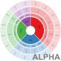

I have developed the tools below to enable users to create data visualisations in a perscribed form. Initially they will be focused on hierarchical displays of information.
|  Info Wheel (4-level) |
Info Wheel (3-level) |
Radial Tree (4-level) |
Are you a web developer with the time and ability to do more of this or better? Contact me regarding collaboration.